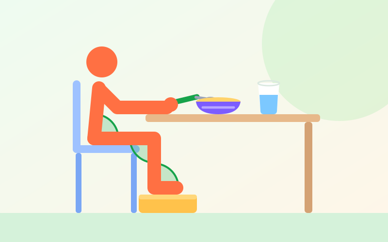
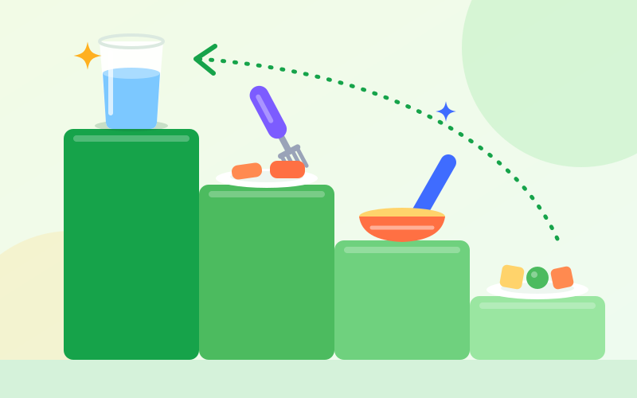
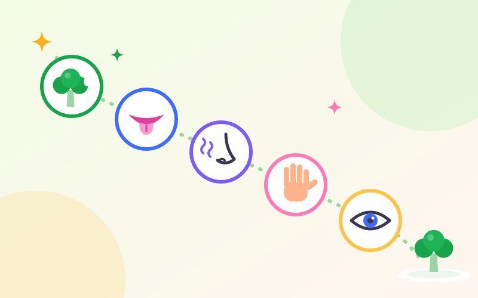

غذا خوردن و خودیاری
مهارتهای غذا خوردن در کودکان: کاردرمانی چطور میتواند کمک کند؟
غذا خوردن فقط «سیر شدن» نیست: نشستن سر سفره، بردن لقمه به دهان، کار با قاشق و لیوان و کنار آمدن با غذای تازه، هر کدام مهارتی جداست. در این مقاله میخوانید این مهارتها چطور رشد میکنند و کاردرمانی تغذیه، در محدودهی کار خودش، کجا میتواند کمک کند.

مهارتهای غذا خوردن یعنی چه؟
وقتی از «مهارتهای غذا خوردن» حرف میزنیم، منظور چند توانایی است که با هم کار میکنند:
- کنترل بدن: صاف و پایدار نشستن، تا دستها برای غذا خوردن آزاد باشند.
- خودخوری: برداشتن غذا با انگشتها و رساندنش به دهان، بدون کمک.
- کار با ابزار: قاشق، چنگال، لیوان و بعدها کارد؛ که به دستورزی و هماهنگی چشم و دست نیاز دارند.
- پذیرش حسی: کنار آمدن با بو، رنگ، دما و بهخصوص بافت غذاهای مختلف.
- جویدن و حرکات دهان: جابهجا کردن لقمه در دهان و جویدن غذاهای سفتتر.
- شرکت در وعده: نشستن تا آخر وعده، صبر کردن، کمک به چیدن سفره و بودن کنار خانواده.
دشواری در هر کدام از اینها میتواند وعدهی غذا را طولانی و پرتنش کند؛ حتی اگر کودک از نظر وزن و رشد مشکلی نداشته باشد.
از چه سنی چه انتظاری داشته باشیم؟
این سنها تقریبیاند و کودکان با سرعتهای متفاوتی پیش میروند. برای نوزادانی که زودتر از موعد به دنیا آمدهاند، معمولاً سن اصلاحشده در نظر گرفته میشود.
- حدود ۶ تا ۹ ماهگی: شروع غذای کمکی با غذاهای نرم و لهشده؛ با کمی حمایت مینشیند و غذا را با کل کف دست برمیدارد.
- حدود ۹ تا ۱۲ ماهگی: لقمههای نرم و کوچک را با شست و انگشت اشاره برمیدارد و با کمک از لیوان باز مینوشد.
- حدود ۱۲ تا ۱۸ ماهگی: قاشق را خودش دست میگیرد و امتحان میکند؛ ریختوپاش زیاد کاملاً طبیعی است.
- حدود ۱۸ تا ۲۴ ماهگی: غذاهای غلیظ را با قاشق و ریختن کمتر میخورد و لیوان را با دو دست نگه میدارد.
- حدود ۲ تا ۳ سالگی: با چنگال تکههای نرم را برمیدارد و بیشتر وعده را خودش میخورد.
- حدود ۴ تا ۶ سالگی: با قاشق و چنگال مستقل است، با کارد کُند پنیر یا کره میمالد و بریدن غذاهای نرم را کمکم یاد میگیرد.
کاردرمانگر در غذا خوردن چه نقشی دارد؟
تمرکز کاردرمانی تغذیهی کودکان روی شرکت کودک در وعدهی غذا و استقلالش در غذا خوردن است. بسته به نیاز کودک، کاردرمانگر ممکن است روی این موارد کار کند:
- وضعیت نشستن: انتخاب و تنظیم صندلی، زیرپایی و ارتفاع میز تا بدن کودک پایدار باشد.
- مهارت دست: قدرت و هماهنگی لازم برای گرفتن قاشق، زدن چنگال و نگه داشتن لیوان.
- ابزار کمکی: پیشنهاد قاشق دستهکلفت، کاسهی لبهبلند یا کفچسب، زیرانداز ضدلغزش و لیوان مناسب.
- پردازش حسی: کمک به کودکی که به بافت، بو یا ظاهر غذا حساسیت شدید دارد، از راه آشنایی تدریجی و بدون اجبار.
- روال و رفتار سر سفره: ساختن روالی قابلپیشبینی و همکاری با خانواده برای کم کردن کشمکش.
مرز کار کاردرمانگر هم مهم است. سرفه یا خفگی هنگام خوردن، مشکلات بلع، کاهش وزن، رفلاکس، حساسیت غذایی و تعیین رژیم غذایی، اول به ارزیابی پزشک کودک نیاز دارند. ارزیابی بلع معمولاً به گفتاردرمانگر سپرده میشود و تنظیم برنامهی غذایی کار متخصص تغذیه است. کاردرمانگر در کنار این متخصصان و بهعنوان بخشی از تیم کار میکند.
نشستن درست، پایهی غذا خوردن
کودکی که روی صندلی سُر میخورد یا پاهایش آویزان است، بخشی از تمرکزش صرف صاف نگه داشتن بدن میشود؛ و دستهایش برای غذا خوردن آزاد نیستند. همان قاعدهی ۹۰ـ۹۰ـ۹۰ که در بهتر کردن گرفتن مداد و دستخط گفتیم، سر سفره هم کار میکند:

- زیرپایی: یک جعبهی محکم یا چند کتاب قطور زیر پای کودک، اگر پایش به زمین نمیرسد.
- تکیهگاه: اگر صندلی عمیق است، یک بالش سفت پشت کمر بگذارید تا کودک جلو بنشیند.
- ارتفاع میز: میز حدود ارتفاع آرنج یا کمی بالاتر؛ نه آنقدر بلند که شانهها بالا بروند.
- حواسپرتی کمتر: تلویزیون و تبلت خاموش؛ تمرکز کودک باید روی غذا و جمع خانواده باشد.
از دست تا قاشق، چنگال و لیوان
ابزارها معمولاً به همین ترتیب یاد گرفته میشوند: اول خوردن با دست، بعد قاشق، بعد چنگال و در کنار آن لیوان باز. خوردن با دست مرحلهی «عقب» نیست؛ همانجاست که کودک گرفتن دقیق و رساندن لقمه به دهان را تمرین میکند.

- غذای مناسب قاشق: با غذاهای غلیظ شروع کنید که روی قاشق میمانند؛ ماست، فرنی، پورهی سیبزمینی.
- قاشق کوتاه و دستهکلفت: گرفتنش برای دست کوچک آسانتر است. اگر لازم شد، دور دسته را با کمی فوم یا پارچه کلفتتر کنید.
- کمک از پشت سر: پشت کودک بنشینید، دستتان را روی دست او بگذارید و حرکت را با هم انجام دهید؛ بعد کمکم کمک را کم کنید.
- یاد دادن از قدم آخر: شما قاشق را پر میکنید و نزدیک دهان میبرید و کودک فقط قدم آخر را انجام میدهد؛ همان روشی که در آموزش لباس پوشیدن توضیح دادیم.
- چنگال: با تکههای نرمی تمرین کنید که چنگال راحت در آنها فرو میرود؛ موز، هویج پخته، پنیر.
- لیوان باز: یک لیوان کوچک و فقط کمی آب؛ ریختن بخشی از یادگیری است.
حساسیت به غذا و بدغذایی
بدغذایی در نوپایی و پیشدبستانی بسیار رایج است و معمولاً با گذشت زمان کمتر میشود. اما بعضی کودکان واکنشی فراتر از «دوست ندارم» دارند: با دیدن یا بوی غذای تازه عُق میزنند، از تماس غذا با دستشان بهشدت ناراحت میشوند یا فهرست غذاهایشان مدام کوتاهتر میشود. در این کودکان، دشواری گاهی در پردازش حسی است، نه لجبازی.
در کاردرمانی، آشنایی با غذای تازه پلهپله و بدون اجبار پیش میرود. خوردن، آخرین پله است:

- کنار غذای امن: مقدار خیلی کمی از غذای تازه را کنار غذایی بگذارید که کودک همیشه میخورد.
- تکرار، بدون فشار: بسیاری از کودکان یک غذای تازه را بعد از بارها دیدن و امتحان کردن میپذیرند؛ اصرار و چانهزنی معمولاً نتیجهی عکس دارد.
- در آشپزی شریکش کنید: شستن سبزی، ریختن، هم زدن و چیدن؛ لمس غذا بیرون از وعده، فشار کمتری دارد.
- الگو باشید: کودک میبیند شما همان غذا را با لذت میخورید.
- هر قدم را ببینید: «خودت هویج را بو کردی!» حتی اگر نخورده باشد.
- هرگز بهزور غذا ندهید: اجبار، ترس و اضطراب سر سفره را بیشتر میکند.
روال وعدهها: قابلپیشبینی و کوتاه
- ساعتهای ثابت: وعدهها و میانوعدهها سر ساعت؛ نه خوردن پراکنده در تمام روز که اشتها را از بین میبرد.
- زمان مشخص: حدود ۲۰ تا ۳۰ دقیقه کافی است؛ وعدهی طولانی برای کودک و خانواده خستهکننده میشود.
- شروع و پایان روشن: شستن دست، نشستن، و یک جملهی ثابت برای تمام شدن؛ یک برنامهی تصویری کوچک هم میتواند مراحل را نشان دهد.
- سفرهی خانوادگی: هر وقت ممکن است، کودک کنار بقیه غذا بخورد و در کشیدن غذای خودش سهم داشته باشد.
چه وقت کمک بگیریم؟
اول با پزشک کودک مشورت کنید، اگر:
- هنگام خوردن یا نوشیدن مکرر سرفه میکند، خفه میشود یا صدای نفسش خسخسی میشود.
- وزنش کم میشود، در منحنی رشد عقب میماند یا نشانههای کمآبی دارد.
- مکرر استفراغ میکند یا به نظر میرسد غذا خوردن برایش دردناک است.
ارزیابی کاردرمانی ممکن است کمک کند، اگر:
- حدود دوسالگی هنوز تلاشی برای خوردن با دست یا قاشق نمیکند.
- فهرست غذاهایش خیلی محدود است و غذای تازه او را بهشدت ناراحت میکند یا به عُق زدن میاندازد.
- نشستن تا آخر وعده برایش بسیار سخت است یا مدام از صندلی سر میخورد.
- با وجود تمرین، کار با قاشق و چنگال برایش بسیار سختتر از همسالانش است.
- وعدههای غذا تقریباً هر روز به کشمکش طولانی تبدیل میشود.
هیچکدام از این نشانهها بهتنهایی به معنای اختلال نیست؛ ارزیابی مشخص میکند دشواری از کجاست و کدام متخصص میتواند کمک کند. برای دیدن نشانههای دیگر در کارهای روزمره، آیا کودکم به کاردرمانی نیاز دارد؟ را بخوانید.
این مقاله برای آگاهی والدین نوشته شده و جای ارزیابی پزشکی یا تخصصی را نمیگیرد.
-
-

راهنمای والدین
کاردرمانی کودکان چیست؟ راهنمای کامل برای والدین
-

استقلال در کارهای روزمره
چگونه به کودک یاد بدهیم خودش لباس بپوشد؟ راهنمای کاردرمانی